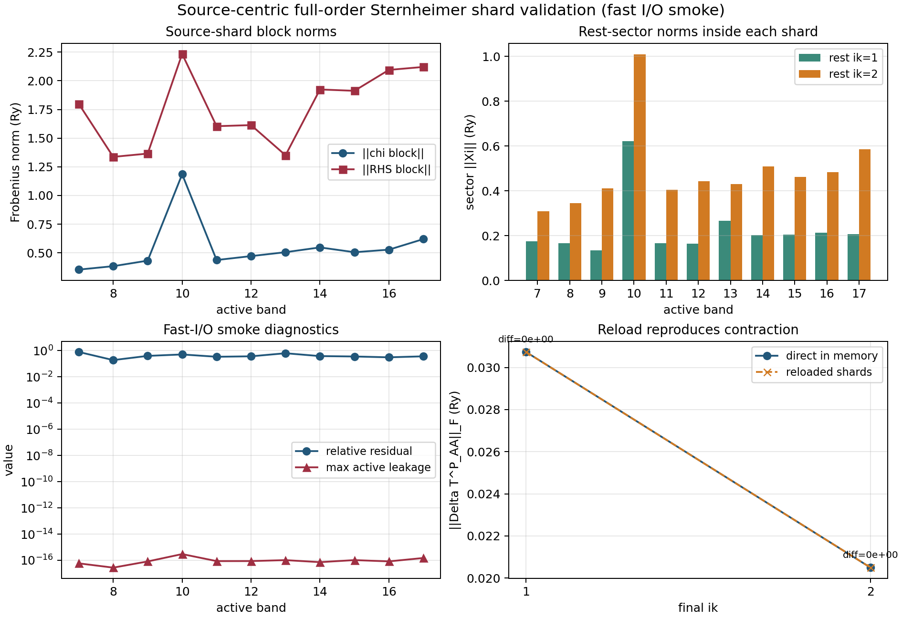
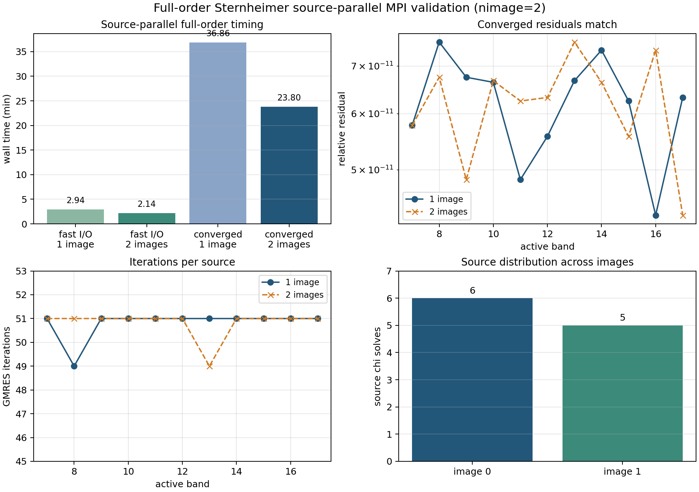
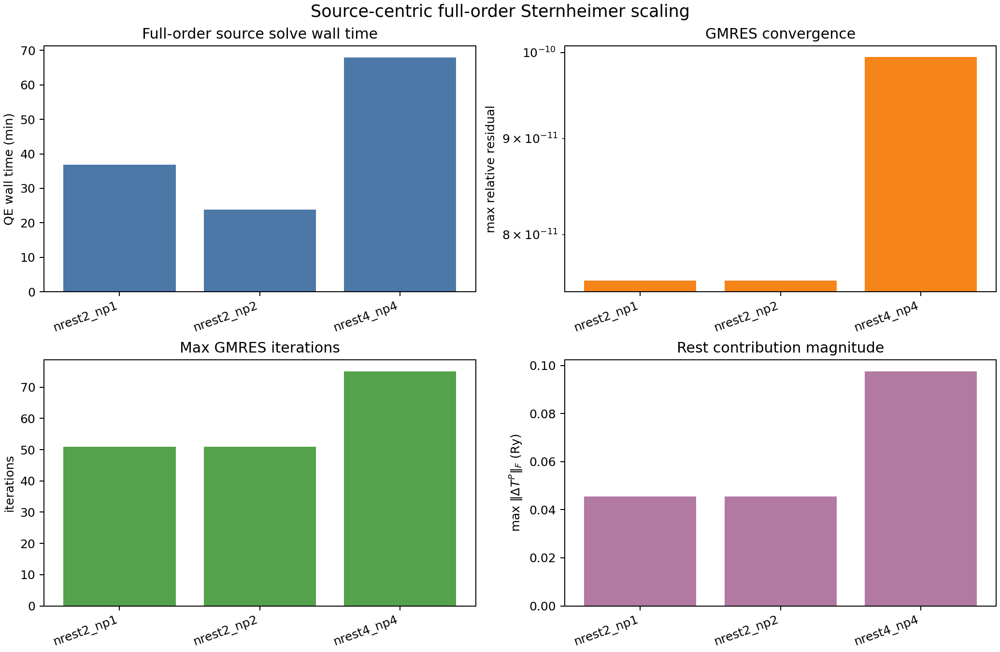
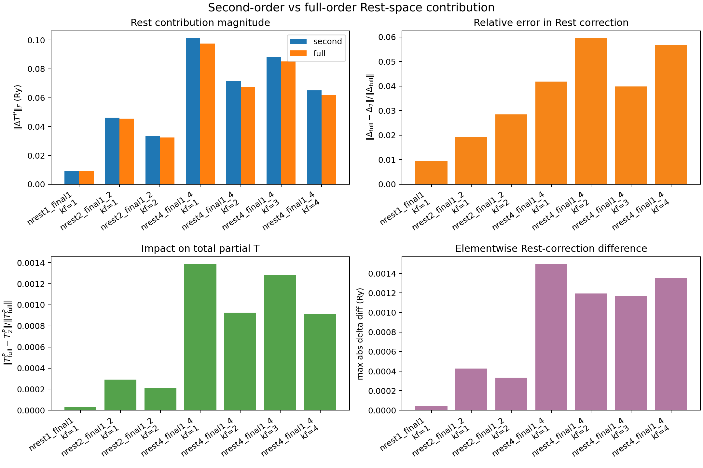
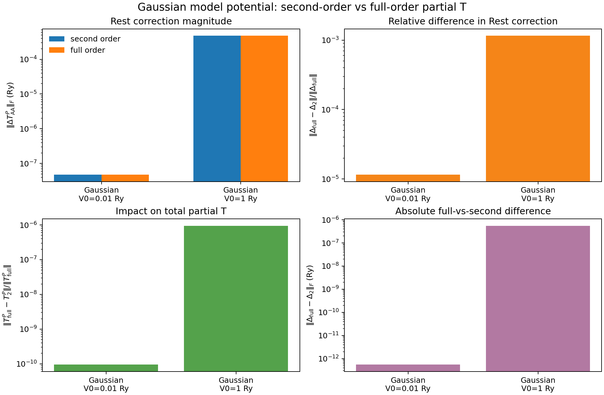
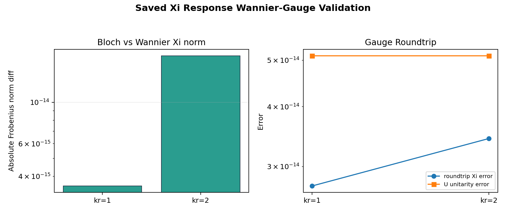
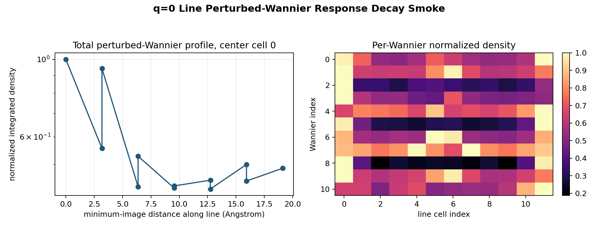
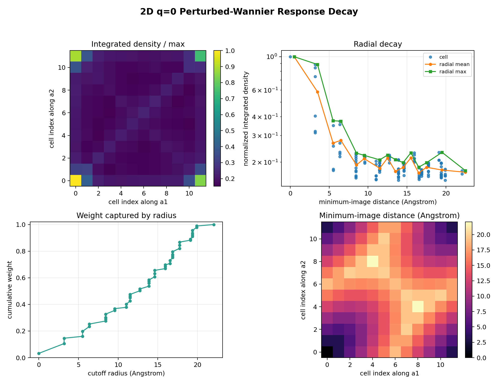
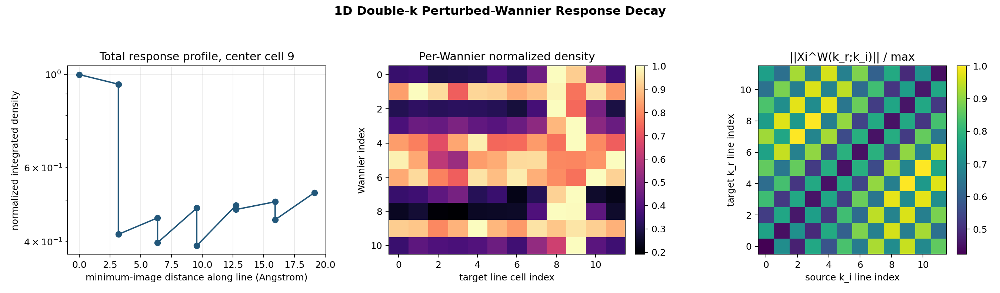
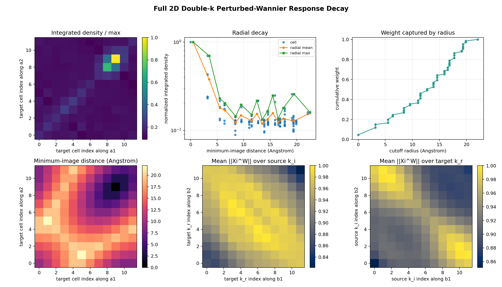

Purpose
This is the first k-resolved Sternheimer smoke after the single-k QE-Hamiltonian validation. For a fixed active initial state at ik=1, the code solves Rest-space Sternheimer equations at selected Rest k points and projects the response into selected final active k points.
The production 12x12 result on this page is still the second-order Rest-space scattering path. A new small-subspace full-order mode has now been added and validated for selected Rest k points.
Full-Order Rest Inverse Prototype
The k-resolved Sternheimer driver now supports mode_in = 'coupled_full_inverse'. In this mode the selected Rest-k blocks are solved as one block GMRES problem with the Rest-Rest coupling term included in the matrix action:
sum_k' Q_R(k) { [omega0 + i eta - H_QE(k)] delta_kk' - w_k' g(k,k') } Q_R(k') Xi_j(k';k_i)
= Q_R(k) g(k,k_i) |a_j,k_i>
The corresponding partially scattered active-space block is evaluated as:
Delta T^P_AA(k_f,k_i) = sum_k w_k <a_i,k_f| g(k_f,k) |Xi_j(k;k_i)> T^P_AA = g_AA + Delta T^P_AA

nrest=1, the k-resolved coupled inverse reproduces the old single-k full inverse to machine precision. For rest ik=1..2, Rest-Rest resummation changes the second-order correction by about 2 percent in this small subset.| Case | ||Delta T^P_AA||_F (Ry) | Diagnostic |
|---|---|---|
single-k full inverse, ik=1 | 9.139886721109e-3 | previous phase7 reference |
k-resolved local full inverse, nrest=1 | 9.139886721109e-3 | same-k full inverse inside k-resolved driver |
k-resolved coupled full inverse, nrest=1 | 9.139886721109e-3 | block GMRES degenerates to single-k full inverse |
local_full - coupled_full, nrest=1 | 3.11e-17 | Frobenius norm of matrix difference |
second order, rest ik=1..2 | 5.703513505852e-2 | independent Rest-k equations |
coupled full inverse, rest ik=1..2 | 5.584606498015e-2 | includes g_RR multiple scattering inside selected Rest subset |
second_order - coupled_full, rest ik=1..2 | 1.269788893891e-3 | Frobenius norm of matrix difference |
The rest ik=1..2 full-order run converged with maximum relative residual 7.56336231e-11 and maximum GMRES iteration count 51. Wall time was 36m38s on one highmem rank; this confirms the implementation but also shows that the current prototype scales roughly as N_rest^2 in the matrix action.
Inputs And Runtime
q=0 Validation
The ik=1, rest=1, final=1 limit reproduces the previously validated single-k QE-Hamiltonian Sternheimer calculation.
| Quantity | k-resolved q=0 smoke | single-k phase7 reference |
|---|---|---|
||g_AA||_F | 3.028765182765 Ry | 3.02876518 Ry |
||delta_T^P||_F | 9.22018407494e-3 Ry | 9.22018407e-3 Ry |
| max relative GMRES residual | 9.74176233e-11 | 9.74176116e-11 |
| max GMRES iterations | 36 | 36 |
Full-Order Xi Response Persistence
The driver can now save the full-order Rest-space response Xi_j(k_r;k_i) after GMRES and read it back to reproduce the active-space contraction. The saved object is the intended handoff to Wannier-function perturbation.
Xi_j(k_r;k_i) = [Q_R(omega0+i eta - H_QE)Q_R - Q_R g_RR Q_R]^-1 Q_R g(k_r,k_i)|a_j,k_i>

initial ik=1, rest ik=1..2, final ik=1..2. Reloaded Xi reproduces the direct in-memory Delta T^P_AA contraction exactly for this run.| Quantity | Value |
|---|---|
Saved Xi blocks | 22 |
| Saved RHS blocks | 22 |
| Metadata rows | 22 |
| Logical file size | 16.3 MB; filesystem usage about 23 MB |
max P_A Xi leakage | 2.58622560e-16 |
| max relative residual | 7.56336564e-11 |
| max GMRES iterations | 51 |
| reload diff, final ik=1 | 0.0 Ry |
| reload diff, final ik=2 | 0.0 Ry |
The binary response directory is intentionally not published to GitHub Pages. Only the reduced figure and summary diagnostics are included here.
Source-Centric Full-Order Chi Shards
The full-order response writer now saves one packed shard per source label b=(j,k_i). Each shard contains all selected Rest sectors Xi_j(k_r;k_i) for that source, so the saved object matches the abstract Sternheimer response |chi_{j k_i}> rather than treating k_r as an independent final momentum.
(z - H0,R - g_RR) |chi_{j k_i}> = Q_R g |psi_{j k_i}>
|chi_{j k_i}> = sum_{k_r} |Xi_j(k_r;k_i)>

initial ik=1, rest ik=1..2, final ik=1..2, and active bands 7-17. The run intentionally used maxiter=2, so it validates the source-shard write/read path and contraction identity, not physical convergence.| Quantity | Value |
|---|---|
| Input | qe_sternheimer/qe_kresolved_sternheimer_ik1_rest1_2_final1_2_real_delta_vacuum_nonlocal_coupled_full_inverse_source_response_fastio.in |
| Slurm job | 17657697, highmem, completed in 00:03:03 |
| Node | b001 |
| Slurm allocated CPUs | 128 CPUs from highmem exclusive allocation |
| QE MPI ranks used | 1 MPI process on 1 node |
| Available node memory at QE startup | 1010953 MiB |
| MaxRSS for QE step | 6568688 KB (~6.26 GiB) |
| QE reported time | 2m49.70s CPU, 2m56.63s WALL |
| Mode | coupled_full_inverse, source-centric shard writer, maxiter=2 |
| Source initial k | initial_ik=1 |
| Rest sectors | rest_ik=1..2; ngk=24205 and 24163 |
| Final k points | final_ik=1..2 |
| Active bands | bands 7..17, 11 active states |
| Source chi objects solved | 11, one per active source band at initial_ik=1 |
| Rest response sectors represented | 22 total Xi_j(k_r;k_i) sectors = 11 sources x 2 Rest k sectors |
| Active output matrix elements | 242 complex elements = 2 final k points x 11 x 11 active matrix entries |
Saved chi shards | 11 |
| Saved RHS shards | 11 |
| Source metadata rows | 11 data rows |
| Sector metadata rows | 22 data rows |
| Response directory size | 24 MB |
| max RHS block norm | 2.233891998113 Ry |
| max relative residual | 7.993127858043e-01; intentionally not converged because this was a fast I/O test |
| GMRES iterations | 2 for every source |
max P_A chi leakage | 2.97957359e-16 |
| reload diff, final ik=1 | 0.0 Ry |
| reload diff, final ik=2 | 0.0 Ry |
The previous sector-file writer remains available for second-order diagnostics. For full-order production, the source-centric shard is the preferred handoff to Wannier-function perturbation because one file corresponds to one source response |chi_{j k_i}>.
Full-Order Source MPI Validation
The coupled_full_inverse path now supports MPI image parallelism over active source labels. Each image solves a disjoint subset of j in |chi_{j k_i}>, then the active-space Delta T^P_AA, residual tables, and reload checks are reduced over images. The Rest-sector block GMRES for each source is unchanged.
srun -n 2 qe_sternheimer/qe_kresolved_sternheimer_smoke.x -ni 2 -nk 1 -i ...source_response_converged_np2.in

initial ik=1, rest ik=1..2, final ik=1..2, active bands 7-17. The two-image converged run matches the single-image source-shard result to roundoff.| Quantity | 1 image converged | 2 images converged |
|---|---|---|
| Slurm job | 17657790 | 17658518 |
| QE MPI ranks / images | 1 / 1 | 2 / 2 |
| Wall time | 36m51.64s | 23m48.23s |
| Slurm elapsed | 00:36:57 | 00:23:53 |
| MaxRSS per QE step | 6572024 KB | 6577084 KB |
| Source distribution | 11 source solves on image 0 | 6 source solves on image 0, 5 on image 1 |
| max GMRES iterations | 51 | 51 |
| max relative residual | 7.563371e-11 | 7.563366e-11 |
max reload DeltaT diff | 0.0 Ry | 0.0 Ry |
| max matrix diff vs 1-image result | reference | 2.22e-16 Ry |
For the corresponding fast-I/O smoke, the 2-image result also matched the 1-image result to 2.22e-16 Ry. The current MPI implementation parallelizes source labels; it does not yet distribute the internal g_RR Rest-sector matvec for one source.
Full-Order Rest Scaling
A larger source-centric full-order test was run with rest ik=1..4 and final ik=1..4. This keeps the same active source set and real DeltaV, but doubles the coupled Rest-sector count relative to the validated nrest=2 case.
srun -n 4 qe_sternheimer/qe_kresolved_sternheimer_smoke.x -ni 4 -nk 1 -i ...source_response_converged_np4.in

nrest=4 run converged and passed reload validation, but the per-source coupled solve is substantially heavier than nrest=2.| Quantity | nrest=2, 1 image | nrest=2, 2 images | nrest=4, 4 images |
|---|---|---|---|
| Slurm job | 17657790 | 17658518 | 17658972 |
| Rest / final k range | 1..2 / 1..2 | 1..2 / 1..2 | 1..4 / 1..4 |
| MPI ranks / images | 1 / 1 | 2 / 2 | 4 / 4 |
| QE wall time | 36m51.64s | 23m48.23s | 1h 8m |
| Slurm elapsed | 00:36:57 | 00:23:53 | 01:08:15 |
| MaxRSS per QE step | 6572024 KB | 6577084 KB | 9520864 KB |
| Source distribution | 11 | 6+5 | 3+3+3+2 |
| Source / sector rows | 11 / 22 | 11 / 22 | 11 / 44 |
| max GMRES iterations | 51 | 51 | 75 |
| max relative residual | 7.563371e-11 | 7.563366e-11 | 9.947015e-11 |
max reload DeltaT diff | 0.0 Ry | 0.0 Ry | 0.0 Ry |
max ||delta_T^P||_F | 4.542677e-02 Ry | 4.542677e-02 Ry | 9.745037e-02 Ry |
The result supports the source-centric MPI route, but it also confirms that the next bottleneck is the internal g_RR Rest-sector matvec. Full nrest=144 production should not be attempted before caching or distributing that matvec.
Second vs Full Rest
Because full-order Rest scattering is too expensive at the full 12 x 12 Rest grid, the immediate hybrid strategy is to keep Rest-space scattering at second order and reserve full resummation for the active space. A small-subspace check compares the second-order Rest correction with the source-centric full-order Rest correction for initial ik=1, active bands 7-17, and nrest=1,2,4.
Delta T^P_2 = g_AR G_R g_RA Delta T^P_full = g_AR G_R [1 - g_RR G_R]^-1 g_RA

T^P_AA = g_AA + Delta T^P_AA is below 1.4e-3 in Frobenius relative norm.| Case | final ik | ||Delta_2||_F | ||Delta_full||_F | Rest relative diff | Total T^P relative diff |
|---|---|---|---|---|---|
nrest=1 | 1 | 9.220184e-03 | 9.139887e-03 | 9.38e-03 | 2.84e-05 |
nrest=2 | 1 | 4.625083e-02 | 4.542677e-02 | 1.92e-02 | 2.92e-04 |
nrest=2 | 2 | 3.337466e-02 | 3.248371e-02 | 2.84e-02 | 2.10e-04 |
nrest=4 | 1 | 1.013834e-01 | 9.745037e-02 | 4.18e-02 | 1.39e-03 |
nrest=4 | 2 | 7.158745e-02 | 6.766904e-02 | 5.96e-02 | 9.27e-04 |
nrest=4 | 3 | 8.835904e-02 | 8.513340e-02 | 3.98e-02 | 1.28e-03 |
nrest=4 | 4 | 6.519892e-02 | 6.180270e-02 | 5.67e-02 | 9.14e-04 |
This supports the proposed hybrid approximation for the tested subset, with a clear caveat: the comparison is only for initial ik=1 and nrest<=4. It is evidence that Rest-Rest multiple scattering is a small correction here, not yet a proof for all source k points or the full nrest=144 space.
Gaussian Second vs Full
The Gaussian model-potential test was rerun using the same QE-Hamiltonian Sternheimer binary and the same wavefunctions for the second-order and full-order Rest-space paths. This avoids the phase/version mismatch that was visible in the older V0=1 Ry files.
second order: Delta T^P_2 = g_AR G_R g_RA full order: Delta T^P_full = g_AR G_R [1 - g_RR G_R]^-1 g_RA

ik=1, active bands 7-17, Gaussian width sigma=1 bohr, and zero-average local model potential. The full-order Rest correction is very close to the second-order result for both amplitudes tested.| Case | ||Delta_2||_F (Ry) | ||Delta_full||_F (Ry) | Rest relative diff | Total T^P relative diff |
|---|---|---|---|---|
V0=0.01 Ry | 4.76575179e-08 | 4.76569790e-08 | 1.15666e-05 | 9.46731e-11 |
V0=1 Ry | 4.76575179e-04 | 4.76036937e-04 | 1.15648e-03 | 9.46273e-07 |
For this local Gaussian potential and single-k QE-Hamiltonian test, Rest-Rest multiple scattering changes the Rest correction by about 1.2e-5 at V0=0.01 Ry and about 1.2e-3 at V0=1 Ry. The corresponding change in the total partially scattered matrix remains below 1e-6 for the strong test.
Xi Wannier-Gauge Closure
The saved full-order response Xi_j(k_r;k_i) has now been rotated on the active source index using the standalone npool=4 EDI-style filukk. This is the first concrete handoff toward Wannier-function perturbation: the Rest-space response remains represented on the QE plane-wave basis at each Rest k, while the active perturbation label is moved into the Wannier gauge.
Xi^W_m(k_r;k_i) = sum_j Xi_j(k_r;k_i) U_jm(k_i)
Xi_j(k_r;k_i) = sum_m Xi^W_m(k_r;k_i) U^*_{jm}(k_i)

initial ik=1, rest ik=1..2, active bands 7-17. The Frobenius norm is preserved by the rotation, and rotating back to the Bloch gauge reconstructs the saved Xi to numerical precision.| Quantity | Value |
|---|---|
| Input response directory | phase8_kresolved_sternheimer/responses/ik1_rest1_2_final1_2_real_delta_vacuum_nonlocal_coupled_full_inverse |
filukk source | phase8_kresolved_sternheimer/standalone_wannier90_np4/filukk |
| Response groups | 2 Rest k points, 22 saved Xi blocks |
max Bloch/Wannier Xi Frobenius norm diff | 1.776356839400e-14 |
| max relative roundtrip reconstruction error | 3.432697324117e-14 |
| max elementwise roundtrip reconstruction error | 8.469283149699e-15 |
max |U^dag U-I| | 5.107025913276e-14 |
The local validator can optionally write rotated .npy response vectors for later interpolation experiments. Those raw rotated files are not published to GitHub Pages; only this reduced diagnostic plot and summary are included.
1D q=0 Perturbed-Wannier Decay Smoke
A first real-space embedding test was run on a restricted q=0 line: ik=1..12 with rest ik = initial ik and final ik = initial ik. This tests the saved-response to real-space perturbed-Wannier pipeline, but it is not yet the full defect double-k Wannier perturbation calculation.
kx = 0 ky = 0, 1/12, ..., 11/12 supercell FFT grid = 40 x 480 x 300

0.488 of the center-cell integrated density, so this test is an inconclusive locality smoke rather than a final decay result.| Quantity | Value |
|---|---|
| Run directory | phase8_kresolved_sternheimer/q0_ky_line_second_order |
| Slurm job | 17636384, highmem, completed in 00:10:05 |
| QE steps | 12 completed, each about 48-52 s wall time; MaxRSS about 5.09 GB per step |
| Mode | second_order saved response; full-order Xi line has not been run yet |
| max relative gauge roundtrip error | 4.814320772978e-14 |
| RMS distance | 10.229626145 Ang |
| farthest/center integrated density | 4.879795420651e-01 |
The likely reason for the weak apparent decay is the restricted test geometry: one k-line and q=0 only. A meaningful defect-locality check needs either the full 2D q=0 mesh or a genuine double-k object Xi(k_r;k_i), then the same real-space embedding/Fourier analysis.
Full 2D q=0 Decay Map
The q=0 decay test has now been extended from one k-line to the full 12x12 coarse mesh. For each k point, the saved response uses initial ik = rest ik = final ik, then the active source index is rotated into the EDI/Wannier90 gauge and embedded into a 12 x 12 x 1 supercell Fourier grid.
primitive FFT grid = 40 x 40 x 300 2D supercell FFT grid = 480 x 480 x 300

0.488 to 0.176. This is still a periodic q=0 perturbation test, not yet the localized defect double-k object.| Quantity | Value |
|---|---|
| Response run | Slurm job 17637671, highmem, completed in 00:16:33 |
| Response points | 144 / 144 q=0 points completed; raw response/run directory about 1.7 GB, not published |
| Postprocess run | Slurm job 17637785, highmem, completed in 00:01:22; MaxRSS 3.1 GB |
| max relative gauge roundtrip error | 4.813354754369e-14 |
| nearest/center integrated density | 8.875843382469e-01 |
| farthest/center integrated density | 1.758200475688e-01 |
| RMS distance | 13.226335965 Ang |
The residual long-range tail is expected for this periodic q=0 test. The next locality test should use a genuinely double-k saved-response block Xi(k_r;k_i) before drawing conclusions about localized defect Wannier perturbation.
1D Double-k Decay Line
A first genuinely double-k line test has now been run on the same kx=0, ky=0..11/12 line. It saves the full object Xi_j(k_r;k_i) for 12 source k points, 12 Rest k points, and 11 active source indices, then rotates the source active index with the same standalone EDI/Wannier90 filukk.
Xi^W_m(G;k_r,k_i) = sum_j Xi_j(G;k_r,k_i) U_jm(k_i)
Xi^W_m(r;R_i=0) = 1/(N_i N_r) sum_{k_i,k_r,G} Xi^W_m(G;k_r,k_i) exp[i(G+k_r).r]

0.523, slightly larger than the q=0 line value 0.488. The source-index gauge roundtrip remains at numerical precision, so the likely limitation is the restricted one-dimensional k geometry.| Quantity | Value |
|---|---|
| Response run | Slurm job 17637918, highmem, completed in 00:25:47 |
| Saved responses | 12 metadata files, each 133 lines; 1584 Xi blocks and 1584 RHS blocks |
| Raw response directory | about 1.6 GB, not published |
| Postprocess run | Slurm job 17638102, highmem, completed in 00:00:45; MaxRSS 876 MB |
| supercell FFT grid | 40 x 480 x 300 |
| center cell | 9 |
| max relative gauge roundtrip error | 5.512278797475e-14 |
| nearest/center integrated density | 9.486144669219e-01 |
| farthest/center integrated density | 5.233160292469e-01 |
| RMS distance | 10.477186676 Ang |
This is the first nonzero-q saved-response locality diagnostic, but it is still only a one-dimensional second-order slice. The next physically meaningful test is the full 12 x 12 source-k by 12 x 12 Rest-k double-k transform, with storage and I/O planned carefully.
Full 2D Double-k Decay Map
The full second-order double-k response set has now been transformed: 144 source k points by 144 Rest k points, with 11 active source indices. The postprocessor streams over target Rest k, rotates the active source index with the standalone EDI/Wannier90 filukk, sums over source k to place the active Wannier perturbation at R_i=0, and embeds the result in a 12 x 12 x 1 supercell.
Xi^W_m(r;R_i=0) = 1/(N_i N_r) sum_{k_i,k_r,G} Xi^W_m(G;k_r,k_i) exp[i(G+k_r).r]
source k grid = 12 x 12
target Rest k grid = 12 x 12
supercell FFT grid = 480 x 480 x 300

0.161, compared with 0.523 for the line test. This remains a second-order Rest-space response; the same transform should be repeated for full-order Rest responses once that production path is optimized.| Quantity | Value |
|---|---|
| Response run | Slurm job 17638670, highmem, completed in 1-10:08:01 |
| Saved responses | 144 metadata files, 228096 Xi blocks; raw scratch directory about 112 GB, not published |
| RHS convergence | 228096 rows, no unconverged rows; max relative residual 9.99994994e-11; max iterations 42 |
| Postprocess run | Slurm job 17666645, completed in 00:09:29; MaxRSS 4475244 KB |
| pair count | 20736 |
| center cell | (9, 9) |
| max relative gauge roundtrip error | 6.231670052344e-14 |
| nearest/center integrated density | 7.004593540564e-01 |
| farthest/center integrated density | 1.612513865182e-01 |
| RMS distance | 13.376779213 Ang |
| mean / max pair response norm | 2.838263769171 / 3.938865907125 |
This is the first complete 2D double-k locality diagnostic for the saved second-order Rest response. It supports using a 2D double-k transform for the Wannier perturbation workflow, while keeping the full-order production question separate.
EDI filukk Wannier Gauge
The Sternheimer driver now has a first filukk consumer path using EDI's combined rotation u_kc = u_mat_opt * u_mat. This avoids reconstructing the disentanglement and Wannier rotations separately, which is the safest way to keep the phase convention aligned with EDI.
|w_m(k)> = sum_n |psi_n(k)> U_nm(k) M^W(k_f,k_i) = U^\dagger(k_f) M^B(k_f,k_i) U(k_i)

filukk and an existing ik=1, rest=1, final=1 Sternheimer matrix CSV. The kept bands are exactly 7-17, max |U^\dagger U-I| = 5.73e-13, and the Bloch/Wannier Frobenius norm difference for Delta T^P_AA is 2.19e-16 Ry.| Check | Value |
|---|---|
filukk source | edi-dev/test_edinterp/edi_run2/edi_11bands/filukk |
| Header | nbndep=11, nbndskip=6 |
| Kept bands | 7, 8, 9, 10, 11, 12, 13, 14, 15, 16, 17 |
| Excluded-band lines inferred | 17; this older filukk has no spread block, so the reader detects the logical section instead of assuming current QE nbnd=150. |
max |U^\dagger U-I| | 5.728750807066e-13 |
||Delta T^P||_F Bloch/Wannier diff | 2.185751579731e-16 Ry |
The Fortran executable has been updated with use_wannier_gauge and filukk_file namelist flags and writes Wannier-gauge matrix, pair-summary, unitarity, and metadata CSV files. The QE-linked Slurm smoke completed in 46.4 s wall time with max |U^\dagger U-I| = 5.728751e-13 and maximum Bloch/Wannier Frobenius norm difference 2.104983e-13 Ry.
Standalone EDI-Style Wannier90 MPI
Wannierization is now split into a dedicated executable, qe_edi_wannierize.x. Its internal path is the same EDI sequence: write_winfil_edi, setup_nnkp, ylm_expansion, compute_amn_para, compute_mmn_para, write_band, and run_wannier/write_filukk. The Sternheimer executable no longer runs Wannier90; it consumes the generated filukk.

npool=1 in 15m08s and with npool=4 in 4m16s. The 4-pool MMN stage exercised cross-pool WFC reads, including pool 2 local k 1 -> global k 37. A highmem Sternheimer consumer smoke read the 4-pool filukk with max |U^dag U-I| = 8.59e-14 and Bloch/Wannier norm difference 1.11e-13 Ry.| Check | Result |
|---|---|
| Standalone W90 executable | qe_sternheimer/qe_edi_wannierize.x |
W90 output path, npool=1 | phase8_kresolved_sternheimer/standalone_wannier90/filukk |
W90 output path, npool=4 | phase8_kresolved_sternheimer/standalone_wannier90_np4/filukk |
npool=4 runtime | Slurm job 17627908, completed in 00:04:16; QE step wall time 4m04s. |
| Wannier spread | Total spread 18.7555 Ang^2, matching the single-pool smoke to printed precision. |
| Sternheimer consumer | Slurm job 17628026, highmem, completed in 00:01:00; MaxRSS 5.09 GB. |
| Consumer diagnostics | max |U^dag U-I| = 8.593126e-14; max Bloch/Wannier norm diff = 1.114664e-13 Ry. |
The local collected-WFC bridge keeps EDI's readwfc(ipool, recn, evc) interface, maps (ipool, local k) to the global k index, and reads QE 7 collected wfc<ik> files directly. This preserves the EDI pool-parallel AMN/MMN structure while remaining compatible with the current QE restart format.
4-k Smoke Results

initial ik=1 and rest ik=1..4.| initial ik | final ik | ||g_AA||_F (Ry) | ||delta_T^P||_F (Ry) | ||T^P_AA||_F (Ry) |
|---|---|---|---|---|
| 1 | 1 | 3.028765182765 | 1.013833998709e-1 | 2.931626493062 |
| 1 | 2 | 4.411549849075 | 7.158745432577e-2 | 4.346075545636 |
| 1 | 3 | 2.725489755487 | 8.835903870799e-2 | 2.642811623624 |
| 1 | 4 | 3.888508105418 | 6.519892372470e-2 | 3.830636837759 |
All 44 RHS solves converged. The maximum relative residual is 9.95966013e-11, and the maximum GMRES iteration count is 40.
Image-MPI Production Path
The k-resolved driver now supports QE image-level task parallelism. Each image keeps a complete 12x12 k-grid and its own QE h_psi communicator. Rest k points are distributed by MOD(irk-1,nimage) == my_image_id, and the partial delta_T^P blocks are reduced over inter_image_comm.

| Run | Images | Wall time | max |diff| in summary norms vs 1 image | max relative residual |
|---|---|---|---|---|
| reference 4-k smoke | 1 | 275.61 s | 0 | 9.95966013e-11 |
| image-MPI 4-k smoke | 2 | 203.25 s | 8.88e-16 Ry | 9.95967967e-11 |
This production route is intended for full rest ik=1..144 runs using -ni NIMAGE -nk 1. It deliberately avoids QE k-pool splitting because cross-k matrix elements require arbitrary initial, Rest, and final k wavefunctions in the same image.
Full 12x12 Production Result
The full selected-initial-k production run completed for initial ik=1, rest ik=1..144, and final ik=1..144 using 72 images on one highmem node.
9.97858095e-11.max ||delta T^P_AA||_F = 3.81532094 Ry at final ik=1.
g_AA, second-order Rest correction delta T^P_AA, and resulting T^P_AA over all 144 final k points.
ik=1.| Quantity | min | max | mean |
|---|---|---|---|
||g_AA(kf,ki)||_F | 0.95237705 Ry at final ik 143 | 4.41154985 Ry at final ik 2 | 1.83886164 Ry |
||delta T^P_AA(kf,ki)||_F | 0.44669808 Ry at final ik 119 | 3.81532094 Ry at final ik 1 | 1.90255231 Ry |
||T^P_AA(kf,ki)||_F | 1.01131893 Ry at final ik 93 | 2.68429785 Ry at final ik 13 | 1.80786869 Ry |
This is still the second-order Rest-space result g_AR G_R g_RA. It does not yet include Rest-Rest multiple scattering through [1 - g_RR G_R]^{-1} or active-space dynamic resummation.
Interpretation
The q=0 result verifies that the k-resolved driver reduces to the already validated single-k Sternheimer path. The 4-k smoke then exercises the new cross-k local folding and NC nonlocal projector-difference action.
The Rest-space correction is noticeably k-dependent, ranging from about 6.52e-2 to 1.01e-1 Ry over the selected final k points. This is still a small selected-k smoke, not a converged 12x12 Rest-space calculation.
Reproducibility
module reset module load aocc/3.1.0 openmpi/4.1.6 module load amdblis/3.0 amdlibflame/3.0 amdlibm/3.0 fftw make -C qe_sternheimer qe_kresolved_sternheimer_smoke.x make -C qe_sternheimer qe_edi_wannierize.x
sbatch qe_sternheimer/run_edi_wannierize_mos2_active_7_17_np4.sh sbatch qe_sternheimer/run_kresolved_standalone_np4_wannier_gauge_smoke.sh
qe_sternheimer/qe_kresolved_sternheimer_smoke.x \ -i qe_sternheimer/qe_kresolved_sternheimer_ik1_rest1_1_final1_1_real_delta_vacuum_nonlocal.in qe_sternheimer/qe_kresolved_sternheimer_smoke.x \ -i qe_sternheimer/qe_kresolved_sternheimer_ik1_rest1_4_final1_4_real_delta_vacuum_nonlocal.in
qe_sternheimer/qe_kresolved_sternheimer_smoke.x \ -i qe_sternheimer/qe_kresolved_sternheimer_ik1_rest1_1_final1_1_real_delta_vacuum_nonlocal_coupled_full_inverse.in qe_sternheimer/qe_kresolved_sternheimer_smoke.x \ -i qe_sternheimer/qe_kresolved_sternheimer_ik1_rest1_2_final1_2_real_delta_vacuum_nonlocal_coupled_full_inverse.in
qe_sternheimer/qe_kresolved_sternheimer_smoke.x \ -i qe_sternheimer/qe_kresolved_sternheimer_ik1_rest1_2_final1_2_real_delta_vacuum_nonlocal_coupled_full_inverse_save_response.in
module load anaconda/2024.02-py311 conda activate Tmat python scripts/phase8_response_wannier_gauge.py --write-rotated
sbatch -p highmem qe_sternheimer/run_response_q0_ky_line_second_order.sh module load anaconda/2024.02-py311 conda activate Tmat python scripts/phase8_response_decay_1d.py
sbatch qe_sternheimer/run_response_q0_full2d_second_order_parallel.sh sbatch qe_sternheimer/run_response_q0_full2d_decay_postprocess.sh
sbatch qe_sternheimer/run_response_doublek_ky_line_second_order_parallel.sh sbatch qe_sternheimer/run_response_doublek_ky_line_decay_postprocess.sh
qe_sternheimer/qe_kresolved_sternheimer_smoke.x \ -i qe_sternheimer/qe_kresolved_sternheimer_ik1_rest1_1_final1_1_real_delta_vacuum_nonlocal_wannier_gauge.in
mpirun -np 2 qe_sternheimer/qe_kresolved_sternheimer_smoke.x \ -ni 2 -nk 1 \ -i qe_sternheimer/qe_kresolved_sternheimer_ik1_rest1_4_final1_4_real_delta_vacuum_nonlocal_images.in sbatch qe_sternheimer/run_kresolved_sternheimer_ik1_full_144_images.sh
phase8_kresolved_sternheimer/ik1_rest1_144_final1_144_real_delta_vacuum_nonlocal_second_order_images_report.md phase8_kresolved_sternheimer/ik1_rest1_144_final1_144_real_delta_vacuum_nonlocal_second_order_images_pair_summary.csv phase8_kresolved_sternheimer/ik1_rest1_144_final1_144_real_delta_vacuum_nonlocal_second_order_images_rhs.csv phase8_kresolved_sternheimer/ik1_rest1_144_final1_144_real_delta_vacuum_nonlocal_second_order_images_matrix.csv phase8_kresolved_sternheimer/wannier_response_gauge_validation_nrest1_2/xi_wannier_gauge_validation_report.md phase8_kresolved_sternheimer/wannier_response_decay_q0_ky_line_second_order/q0_line_decay_report.md phase8_kresolved_sternheimer/wannier_response_decay_q0_full2d_second_order/q0_2d_decay_report.md phase8_kresolved_sternheimer/wannier_response_decay_doublek_ky_line_second_order/doublek_line_decay_report.md
Published outputs are reduced CSV summaries, selected plots, and generated reports. Raw wavefunctions, cube grids, binary tensors, rotated .npy responses, and scheduler logs remain excluded.
Not Published
The full run directory contains raw QE wavefunctions, large cube data, generated executables, binary tensors, and run logs. Those files are intentionally not copied into docs/ and are excluded from the GitHub Pages commit.